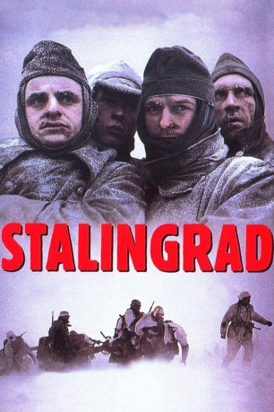
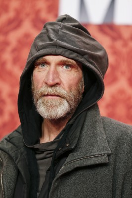

#2145 Stalingrad
 
 IMDB-Wertung: 7.5 / 10
IMDB-Wertung: 7.5 / 10  Metascore: 0
Metascore: 0 
Stalingrad 1942. Die 6. Armee der deutschen Wehrmacht ist einmarschiert und beginnt eine gnadenlose Schlacht. Nach anfänglichen Eroberungen werden die Soldaten von der Roten Armee eingekesselt: Auftakt für ein Gemetzel, das für viele die Entscheidungsschlacht des Zweiten Weltkrieges symbolisiert. Für Fritz, "Rollo", "GeGe" und ihre Kameraden nur ein grausamer Kampf ums Überleben.
Jahr: 1993
Dauer: 134 Minuten
FSK: 12
Land: Deutschland Studio: Senator FilmTonspuren:
Untertitel:
Auflösung: 1080p (1920x1040) Größe: 11366 MB
Genre: Drama, Krieg
Regisseur: Joseph Vilsmaier
Drehbuch: Jürgen Büscher, Christoph Fromm, Johannes Heide, Joseph Vilsmaier
Soundtrack: Enjott Schneider
Darsteller:
 Thomas Kretschmann als Hans von Witzland
Thomas Kretschmann als Hans von Witzland-  Jochen Nickel als Manfred Rohleder 'Rollo'
 Sylvester Groth als Otto
Sylvester Groth als Otto- Oliver Broumis als HGM
- Hynek Cermák als Soldat 2
- Dominique Horwitz als Fritz Reiser
- Sebastian Rudolph als Gege
- Dana Vávrová als Irina
- Martin Benrath als General Hentz
- Karel Hermánek als Hauptmann Musk
- Heinz Emigholz als Edgar
- Ferdinand Schuster als Double Edgar
- Dieter Okras als Hauptmann Haller
- Zdenek Vencl als Wölk
- Mark Kuhn als Pflüger
- Thorsten Bolloff als Feldmann
- Alexander Wachholz als Pfarrer Renner
- J. Alfred Mehnert als Lupo
- Ulrike Arnold als Viola
- Christian Knoepfle als Dieter
- Flip Cap als Ludwig
- Jaroslav Tomsa als Opa Erwin
- Pavel Mang als Kolja
- Otto Sevcík als Major Kock
- Jophi Ries als Schröder
- Svatopluk Ricánek als German Soldier
- Otmar Dvorak als Von Lausitz
- Karel Hábl als Adjutant 2
- Thomas Lange als Arzt 1
- Karel Hlusicka als Arzt 2
- Alexander Koller als Akkordeonspieler
- Petr Skarke als Soldat 1
- Cestmír Randa als Soldat 3
- Jan Preucil als Major - Flughafen
- Bohumil Svarc als Arzt - Flughafen
- Pirjo Leppänen als Weinende Mutter
- Aale Mantila als Alter Vater
- Theresa Vilsmaier als Kinder mit Mutter
- Janina Vilsmaier als Kinder mit Mutter
- Oliver Steindler als Kinder mit Mutter
- Jana Matulová-Steindlerová als Kinder mit Mutter
- Kaja Hermanek als Kinder mit Mutter
Datei: X:\1993\Stalingrad (1993, FSK12, 1920x1040).mkv seit 08.10.2015
Festplatte: HD 1992-1995
 Es gibt insgesamt 68 Filme in der Gruppe '1993'
Es gibt insgesamt 68 Filme in der Gruppe '1993'